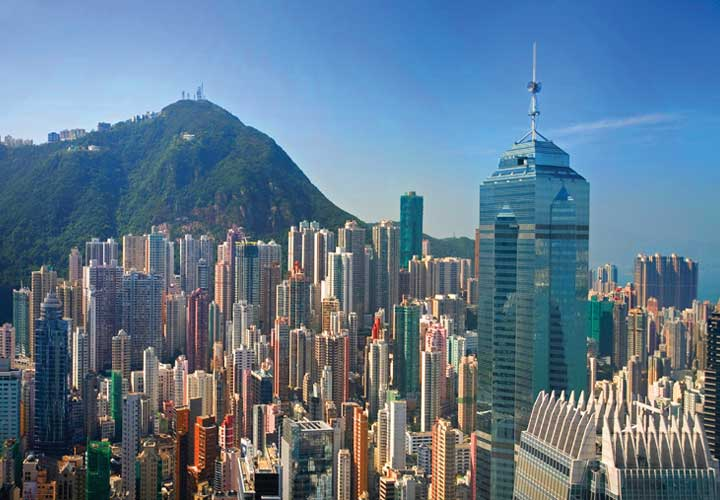

DesTination UnKnown
Answer the following questions to find out which destination is best suited for you:
 THAILAND
THAILAND
Thailand is a country on Southeast Asia’s Indochina peninsula known for tropical beaches, opulent royal palaces, ancient ruins and ornate temples displaying figures of Buddha, a revered symbol. In Bangkok, the capital, an ultramodern cityscape rises next to quiet canal and riverside communities. Commercial hubs such as Chinatown consist of labyrinthine alleys crammed with shophouses, markets and diners.
COSTA RICA!
Costa Rica is a rugged, rainforested Central American country with coastlines on the Caribbean and Pacific. Though its capital, San Jose, is home to cultural institutions like the Pre-Columbian Gold Museum, Costa Rica is known for its beaches, volcanoes and immense biodiversity. Roughly a quarter of its area is made up of protected jungle, rich with wildlife including spider monkeys and quetzal birds.
BORA BORA
Bora Bora is a small South Pacific island northwest of Tahiti in French Polynesia. Surrounded by sand-fringed motus (islets) and a turquoise lagoon protected by a coral reef, it’s known for its scuba diving. It's also a popular luxury resort destination where some guest bungalows are perched over the water on stilts. At the island's center rises 727m Mt. Otemanu, a dormant volcano.
BERLIN
Berlin, Germany's capital and cultural center, dates to the 13th century. Divided during the Cold War, today it's known for its art scene, nightlife and modern architecture, such as Mies van der Rohe’s landmark Neue Nationalgalerie. Reminders of the city's turbulent 20th-century history include its Holocaust Memorial and the Berlin Wall's graffitied remains. Its 18th-century Brandenburg Gate has become an iconic symbol of reunification.
CAPE TOWN
Cape Town is a port city on South Africa’s southwest coast, on a peninsula beneath the imposing Table Mountain. Slowly rotating cable cars climb to the mountain’s flat top, from which there are sweeping views of the city, the busy harbor and boats heading for Robben Island in Table Bay. The notorious prison that once held Nelson Mandela is now a living museum.
PERU
Peru is a country in South America that's home to a section of Amazon rainforest and Machu Picchu, an ancient Incan city set high in the Andes mountains. The area surrounding Machu Picchu, including the Sacred Valley, the Inca Trail and the lively city of Cusco, is also rich in Incan sites as well as hiking, rafting and mountain-biking opportunities.
 HONG KONG
Hong Kong is a city, and former British colony, in southeastern China. Vibrant and densely populated, it’s a major port and global financial center famed for its tower-studded skyline. It’s also known for its lively food scene – from Cantonese dim sum to extravagant high tea – and its shopping, with options spanning chaotic Temple Street Night Market to the city’s innumerable bespoke tailors.
SINGAPORE
Singapore, an island city-state off southern Malaysia, is a global financial centre with a tropical climate and multicultural population. In circa-1820 Chinatown stands the red-and-gold Buddha’s Tooth Relic Temple, Little India offers colorful souvenirs and Arab Street is lined with fabric shops. Singapore is also known for eclectic street fare, served in hawker centres such as Tiong Bahru and Maxwell Road.
BARCELONA
Barcelona, the cosmopolitan capital of Spain’s Catalonia region, is defined by quirky art and architecture, imaginative food and vibrant street life. It has medieval roots, seen in the mazelike Gothic Quarter, but a modernist personality represented by architect Antoni Gaudí’s fantastical Sagrada Família church. Its restaurant scene, anchored by the central Boqueria market, ranges from fine dining to tiny tapas bars.
 TEL AVIV
TEL AVIV
Tel Aviv, a city on Israel’s Mediterranean coast, is marked by its stark 1930s Bauhaus buildings, thousands of which are clustered in the White City architectural area. The city is also known for its accessible beaches and vibrant nightlife ranging from Lilienblum Street’s lounges to Dizengoff Street’s open-air cafes. Tel Aviv Port’s waterfront promenade is lined with shops and restaurants.